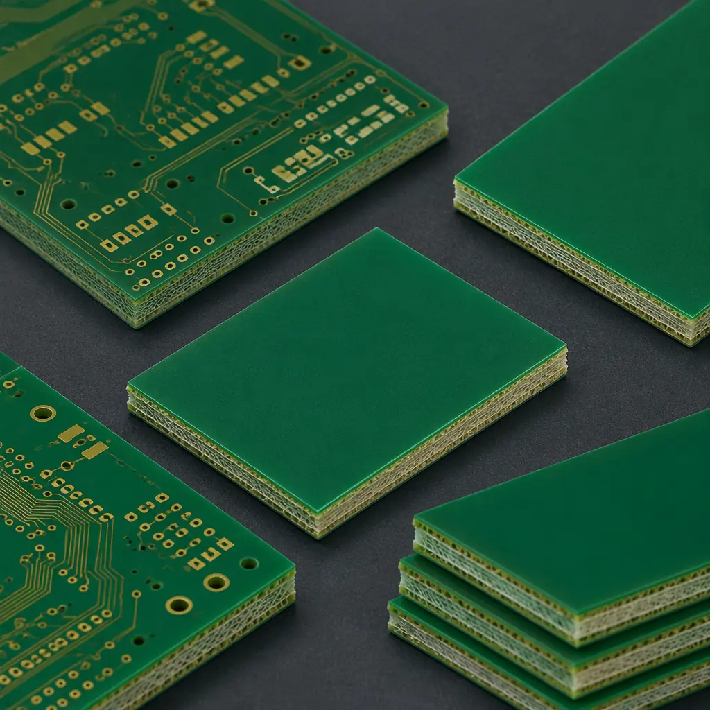
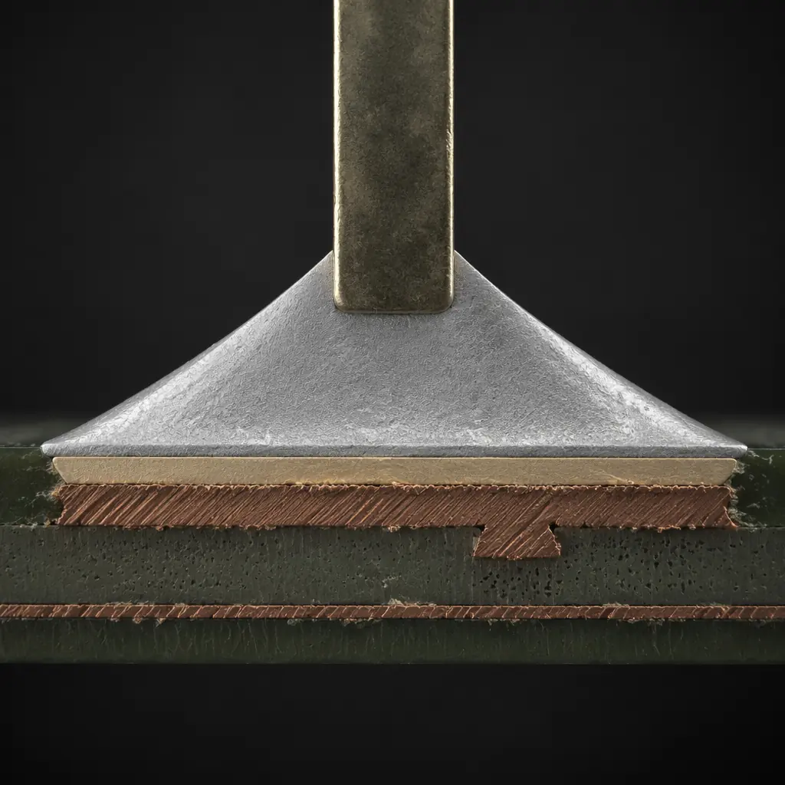
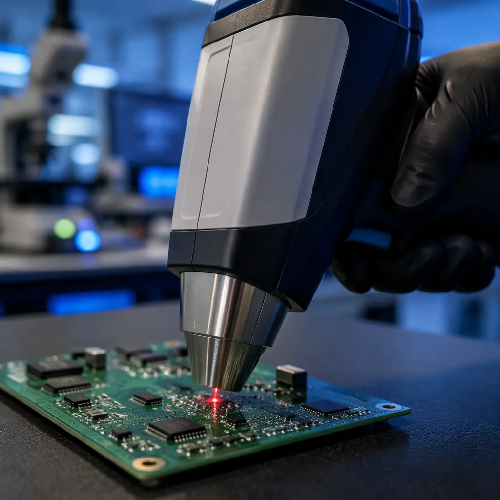

In 2023, a German automotive supplier had an entire container of ECU modules rejected at Hamburg port. The reason: a single connector on the PCB contained lead above the 0.1% threshold. The cost was €340,000 in returned goods, missed production deadlines, and contract penalties — all from a compliance gap that would have cost under $200 to prevent at the sourcing stage.
RoHS compliance is no longer optional for PCB buyers targeting global markets. The EU RoHS Directive (2011/65/EU) restricts six hazardous substances, and similar regulations now exist in the UK, China (China RoHS 2), California (SB 20/50), UAE, and South Korea. At Huaxing PCBA, our ISO 14001:2015 and IATF 16949-certified facility has maintained full RoHS compliance across 80,000 m² of monthly PCB output for over a decade — but compliance starts with what you specify, not just what your supplier claims. This guide covers exactly what to check.

What the RoHS Directive Actually Restricts
The Restriction of Hazardous Substances (RoHS) Directive targets six substances — four heavy metals and two flame retardant families. Every material in your PCB stackup — base laminate, copper foil, solder mask, surface finish, and component terminations — must stay below these thresholds by weight in homogeneous materials:
| Substance | Limit (ppm) | Where It Appears in PCBs | Risk Level |
|---|---|---|---|
| Lead (Pb) | <1,000 | Solder (SnPb), HASL finish, component leads, PZT ceramics | High |
| Mercury (Hg) | <1,000 | Switches, relays, sensors (rare in standard PCBs) | Low |
| Cadmium (Cd) | <100 | Plating, contacts, thick-film inks, some resistors | Medium |
| Hexavalent Chromium (Cr6+) | <1,000 | Anti-corrosion coatings, chromate conversion on aluminum | Medium |
| PBB (Polybrominated Biphenyls) | <1,000 | Flame retardants in FR-4 laminate | Medium |
| PBDE (Polybrominated Diphenyl Ethers) | <1,000 | Flame retardants in FR-4 laminate | Medium |
In practice, lead is the substance that trips up most PCB orders. Traditional tin-lead solder (Sn63/Pb37) melts at 183°C and has been the industry standard for decades — but it contains roughly 37% lead by weight, far exceeding the 0.1% threshold. Switching to lead-free soldering isn't just a material swap; it changes your entire thermal profile. We cover this in detail below.
Procurement Check: When your contract manufacturer says "RoHS compliant," ask for the specific compliance certificate per material batch — not a generic company certification. A valid RoHS certificate references EN 62321 test methods and shows actual XRF or ICP-MS readings for each restricted substance, not just a "pass" checkbox.
RoHS vs REACH vs WEEE — Understanding the Regulatory Triangle
Buyers often conflate RoHS, REACH, and WEEE, but they serve different functions — and non-compliance with any one of them can block your product from the EU market:
Restriction of Hazardous Substances — Material Content
Restricts what's IN your product. Covers 6 substances (plus 4 phthalates under RoHS 3) at the homogeneous material level. Applies to electronic and electrical equipment (EEE) across 11 categories. Compliance is demonstrated through material declarations, test reports, and CE marking. For PCB-specific coverage, see our certifications and compliance guide for the full regulatory landscape.
Registration, Evaluation, Authorisation of Chemicals — Broader Chemical Safety
Covers chemical substances across your entire supply chain, not just the final product. The SVHC (Substances of Very High Concern) candidate list currently contains 240+ substances. Unlike RoHS, REACH applies to all products sold in the EU — including non-electronic ones. Your PCB supplier must be able to provide REACH SVHC declarations for every material in the stackup, including solder mask, legend ink, and conformal coating.
Waste Electrical and Electronic Equipment — End-of-Life Responsibility
Governs how your product is disposed of. Requires producers to finance collection, treatment, and recycling of e-waste. While WEEE doesn't directly restrict PCB materials, it incentivizes design for recyclability — and penalizes products that mix hazardous materials in ways that complicate recycling. A PCB that's RoHS-compliant is inherently easier to recycle under WEEE.
Lead-Free Soldering — The Core of RoHS PCB Compliance
For PCB manufacturing, the single biggest RoHS impact is the transition from tin-lead (SnPb) to lead-free solder alloys. This change affects your reflow profile, material selection, inspection criteria, and long-term reliability — and it's where most procurement specifications fall short.

SAC305 — The Industry Standard Lead-Free Alloy
Sn96.5/Ag3.0/Cu0.5 (SAC305) is the most widely used lead-free solder alloy, with a melting point of 217-220°C — roughly 34°C higher than Sn63/Pb37. This requires reflow oven peak temperatures of 235-250°C (vs 210-225°C for tin-lead), which puts more thermal stress on components and the PCB substrate. High-Tg FR-4 (Tg ≥170°C) becomes essential for lead-free assemblies — standard FR-4 (Tg 130-140°C) can delaminate under repeated lead-free reflow cycles. For substrate selection guidance, see our PCB materials guide with detailed Tg and Td data.
Alternative Alloys — When SAC305 Isn't Enough
Several lead-free alternatives address SAC305's limitations: SN100C (SnCuNi) offers better fluidity for wave soldering; SAC405 provides higher thermal fatigue resistance for automotive under-hood applications; and low-temperature SnBi alloys (melting at 138°C) are used for heat-sensitive components. Each alloy has different wetting behavior, joint appearance, and reliability characteristics — your supplier should recommend based on your specific end-use environment, not default to SAC305 for everything.
Tin Whisker Risk — The Hidden Reliability Concern
Lead-free finishes — particularly pure tin and tin-rich alloys — are susceptible to tin whisker growth: microscopic conductive filaments that can grow from the surface and cause short circuits. This is a critical concern for aerospace, medical, and high-reliability applications. Mitigation strategies include matte tin plating (larger grain structure reduces whisker propensity), conformal coating, or using ENIG/ENEPIG finishes instead of pure tin. Our conformal coating guide covers application methods for whisker mitigation.
RoHS-Compliant Surface Finishes — What Replaces HASL
Traditional hot air solder leveling (HASL) with SnPb is not RoHS-compliant. Lead-free HASL exists but has poor coplanarity for fine-pitch components. Most RoHS-compliant PCB orders use one of the following finishes — each with distinct tradeoffs for shelf life, wire bondability, and cost:
| Finish | RoHS | Shelf Life | Fine Pitch | Wire Bond | Relative Cost |
|---|---|---|---|---|---|
| ENIG (Ni/Au) | ✓ | 12 months | Excellent | Al wire only | Medium-High |
| ENEPIG (Ni/Pd/Au) | ✓ | 12 months | Excellent | Al + Au wire | High |
| Immersion Silver | ✓ | 6 months | Good | No | Medium |
| Immersion Tin | ✓ | 3 months | Good | No | Low-Medium |
| OSP (Organic) | ✓ | 6 months | Good | No | Low |
| Lead-Free HASL | ✓ | 12 months | Poor | No | Low |
| Hard Gold | ✓ | 24 months | Excellent | All types | Very High |
For a deeper dive into finish selection tradeoffs — including solder joint reliability data and intermetallic compound growth rates — see our ENIG vs HASL comparison guide and the solder mask selection guide for compatible mask-finish pairings.
How to Verify Your PCB Supplier's RoHS Compliance
A supplier's claim of "RoHS compliant" is meaningless without verifiable evidence. Here's a practical verification framework used by procurement teams at tier-1 automotive and medical OEMs:
Request Material-Specific Test Reports (Not Just a Certificate)
A generic "RoHS compliance certificate" without test data is insufficient. Insist on EN 62321-compliant test reports that show XRF (X-ray fluorescence) or ICP-MS (inductively coupled plasma mass spectrometry) readings for each restricted substance category — with ppm values, not just pass/fail — for every homogeneous material in your PCB stackup: base laminate, copper foil, solder mask, legend ink, and surface finish. At a minimum, the report should cover lead, cadmium, mercury, and Cr6+ with instrument detection limits below the RoHS thresholds.
Check Supply Chain Traceability
RoHS compliance for your PCB depends on your supplier's suppliers. Every laminate manufacturer (ShengYi, ITEQ, Isola, etc.) provides their own RoHS declarations for each material batch. Your PCB fabricator must maintain a material traceability system that links each production lot to its incoming material batch certificates. During a supplier audit, walk the incoming inspection area — you should see retained samples with batch-traceable labels, not just a "passed" stamp.
Verify On-Site Testing Equipment
A credible RoHS-compliant PCB manufacturer operates in-house XRF analyzers (typically handheld or benchtop units from Olympus, Bruker, or Hitachi) for incoming material screening and periodic production verification. During your audit, ask to see their XRF calibration records and the most recent third-party cross-check (an accredited lab like SGS, TÜV, or Intertek should validate the in-house XRF results at least annually). This is standard practice in IPC Class 2 and Class 3 facilities.
Require Third-Party Lab Validation for High-Volume Orders
For production runs above 10,000 units or products destined for EU medical/automotive markets, engage an independent accredited lab (ISO/IEC 17025) to perform destructive testing on random production samples. This catches issues that XRF screening misses — like lead contamination in inner-layer copper that surface XRF can't reach. Testing cost is typically $300-800 per sample batch — cheap insurance against a customs rejection.
The Real Cost of RoHS Compliance — What Changes and What Doesn't
Procurement managers often assume RoHS compliance adds a significant premium. In reality, the cost impact has narrowed dramatically over the past decade as lead-free became the global default:

Laminate Cost: ~5-10% Higher
RoHS-compliant laminates use phosphorus-based or halogen-free flame retardants instead of brominated compounds. The price gap between standard FR-4 and halogen-free FR-4 has shrunk from ~30% (2015) to ~5-10% today due to industry-wide adoption. High-Tg FR-4 (Tg 170°C+) — necessary for lead-free reflow — adds approximately 10-15% over standard FR-4. See our PCB cost factors breakdown for a full cost model.
Surface Finish Cost: ENIG vs HASL Gap
ENIG costs roughly 2-3× more than traditional SnPb HASL, but lead-free HASL and OSP close most of that gap. For a standard 100×160mm 4-layer board in 1,000-unit quantity, the finish cost difference between OSP and ENIG is approximately $0.12-0.25 per board — negligible in the context of the total assembly cost. Immersion silver and immersion tin sit between these extremes.
Assembly Process Adjustment: Minor Today
Lead-free reflow requires slightly higher energy consumption (peak 245°C vs 220°C) and marginally longer cycle times (typically 5-8% longer dwell). These differences are already baked into the pricing of any modern contract manufacturer — unless you're comparing a legacy SnPb-only line, there is effectively no RoHS surcharge for assembly. Our PCB assembly process guide covers the full SMT workflow.
Bottom Line: For a typical 4-6 layer PCB order today, the total RoHS compliance cost premium is 3-8% over a hypothetical non-compliant equivalent — and that hypothetical no longer exists for any reputable manufacturer serving export markets. The real cost is non-compliance: customs rejection, product recall, and market access loss.
RoHS Documentation, CE Marking, and Exemptions
RoHS compliance is documented, not just manufactured. For EU-bound products, your technical file must include:
EU Declaration of Conformity (DoC)
A legally binding document that identifies the product, lists applicable RoHS directives and harmonized standards, and is signed by an authorized representative. The DoC must be available for 10 years after the product is placed on the market. Your PCB supplier can provide material-level declarations, but the final product DoC is your responsibility as the manufacturer.
CE Marking Requirements
Since 2013, RoHS compliance is a prerequisite for CE marking of electronic products. You cannot legally affix the CE mark without a complete RoHS technical file. This means your PCB supplier must be part of your CE technical documentation chain — another reason to verify their compliance rather than accept a verbal assurance.
RoHS Exemptions — Know What's Allowed
The RoHS directive includes specific exemptions, many time-limited. Current exemptions relevant to PCBs include: lead in high-melting-temperature solders (Exemption 7a, expires 2027), lead in ceramic PZT capacitors (7c-I), and lead as an alloying element in aluminum with up to 0.4% lead by weight (6b). If your application genuinely requires an exempted use, document it explicitly — don't rely on the supplier to know which exemptions apply to your end product.
RoHS Compliance Checklist for PCB Buyers
Before placing your next PCB order, verify these seven items with your supplier:
Material declarations with XRF/ICP-MS data, not just pass/fail
Per EN 62321 test methods; ppm values for Pb, Cd, Hg, Cr6+, PBB, PBDE
High-Tg FR-4 specified (Tg ≥170°C) for lead-free reflow
Required to survive 235-250°C peak reflow temperatures without delamination
Surface finish explicitly specified as RoHS-compliant
ENIG, ENEPIG, OSP, immersion silver/tin, or lead-free HASL — not "standard HASL"
Incoming material traceability system verified
Batch-level laminate and chemical certificates linked to your production lot
ISO 14001 or equivalent environmental management certification
Demonstrates systematic environmental controls, not just one-time testing
REACH SVHC declaration for full material stackup
Not just RoHS — REACH covers 240+ additional substances beyond the RoHS six
Third-party lab cross-check for volumes above 10k units
ISO/IEC 17025 accredited lab; destructive analysis of random production samples
At Huaxing PCBA, every production lot ships with a full material compliance package: EN 62321 test reports with quantitative XRF results, batch-traceable laminate certifications from ShengYi and ITEQ, REACH SVHC declarations, and ISO 14001 environmental management certification. Our in-house XRF analyzer (Olympus Vanta series) performs incoming material screening on every laminate lot, with annual third-party cross-validation by SGS. Our turnkey PCB assembly service extends this compliance chain through the full SMT process. For a project-specific compliance assessment, contact our engineering team with your target market and bill of materials.